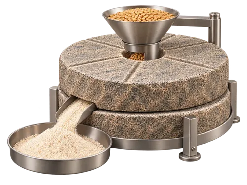
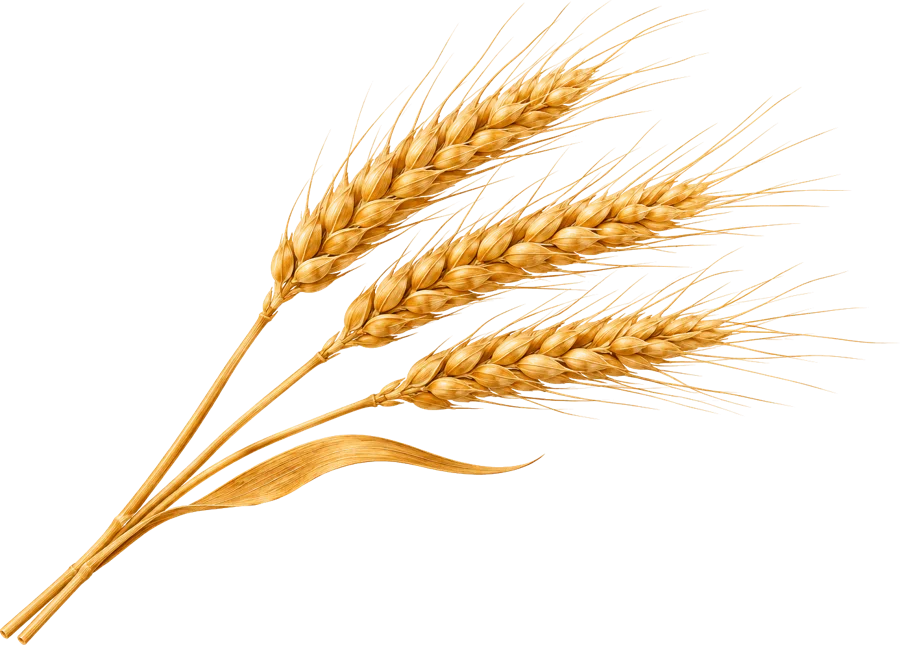
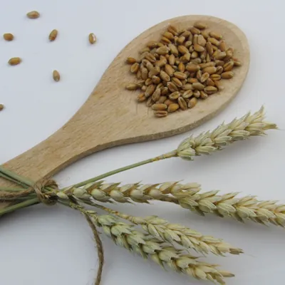
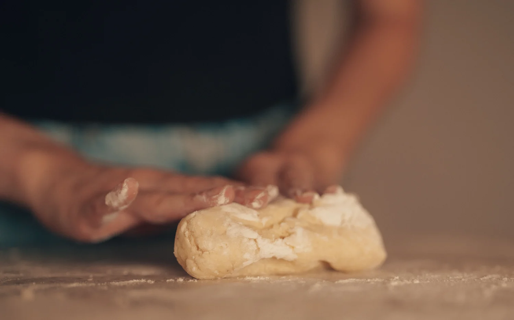

Slow by design.
Natural millstones grind the wheat in small batches.

 Shop atta
Shop atta 
Fresh chakki atta
Single-origin MP Sharbati wheat,
slowly milled on natural stone.
Whole wheat atta


Our process
Natural millstones grind the wheat in small batches.


MP Sharbati wheat, cleaned in several stages.

The bran stays in the atta. Nothing added.

Our story
We look closely at the cooking oil and utensils we bring home. We think the atta we use every day deserves the same care.
Delhi NCR
Share your PIN code to check delivery to your home.